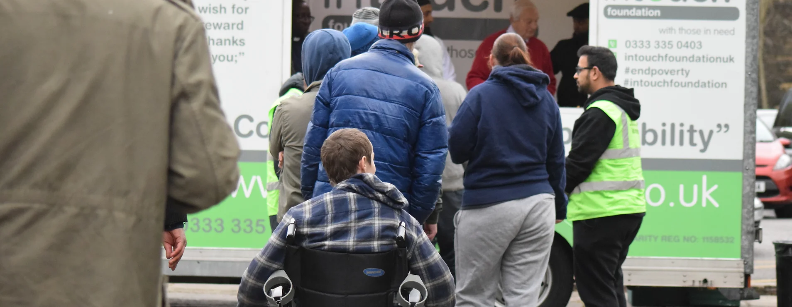
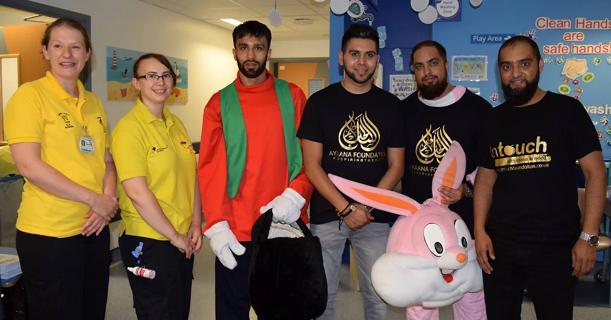

Intouch Food Kitchen
The mobile kitchen originally launched in Bradford in December 2012. In April 2013 we launched in InTouch Keighley and in May 2014 we launched InTouch Leeds. We are now looking to work with local teams to expand our project into neighbouring cities. Since the project launched - across the cities we have distributed in excess of 200,000 meals.
The aim of the mobile kitchen is to provide hot food and drinks to people that are either living in poverty or are homeless. We provide cooked meals which normally consist of a chicken biryani along with raita and bread. We also provide hot drink drinks which include hot chocolate, tea, coffee along with biscuits, cake and fruit.
Our volunteers come from all walks of life and have different backgrounds, faiths and races. InTouch Foundation is a platform to bring different communities together for one common cause - and that is to help people that are in need.
Marriage Support
Due to crushing poverty, countless families in South Asian countries are unable to have their daughters and sisters get married. Unfortunately, due to societal pressures, it is not uncommon for people to resort to extreme measures such as committing suicide.
InTouch Foundation is launching a marriage project in Pakistan to support families in these difficult situations by providing basic items according to the Sunnah of Prophet Mohammed (pbuh) necessary for newlywed girls, including some clothing, utensils, bedding and more, along with some financial assistance to offset marriage expenses.
InTouch Foundation will assist in covering the cost of the marriage, depending on the region and local requirements. The marriage maybe held individually or where there are a number of couples in a particular region group weddings may take place. Depending on the region, it costs approximately £300 for the wedding day and a further £200-£300 for the gifts to support the marriage of one young woman/man.

Project Ayaana
Project Ayaana was set up in the memory of our Late Granddad Dr Mohammad Suliman who passed away in October 2014. Dr Suliman was a true humanitarian working as a field doctor in rural pakistan for over 50 years. His compassion and love to the most vulnerable inspired us to carry his legacy on.
“Inspire the soul and watch the magic happen”
Our Mission is simply to inspire each soul we come across to leave their legacy! We work tirelessly to bring communities together to promote community cohesion and an understanding of all cultures and religions through the use of social action projects locally and internally to help bring an end to the suffering of others.